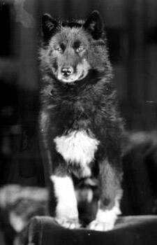

Meet Our Heroes
Welcome to the Dog Hall of Fame, where we honor the brave, loyal, and legendary dogs from around the world.
From search and rescue dogs to pop culture icons, we celebrate their stories here.
Featured Dog
Balto was a Siberian Husky who led his team on the final leg of the 1925 serum run to Nome, Alaska. A true canine hero!
Read more about Balto on Wikipedia.